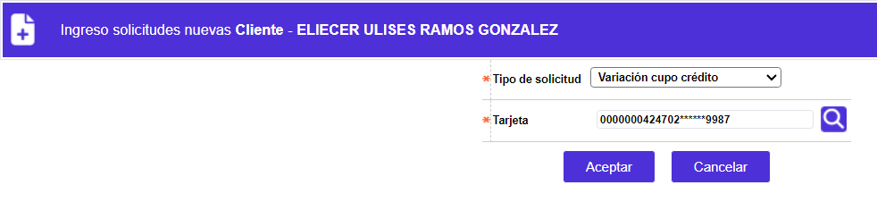
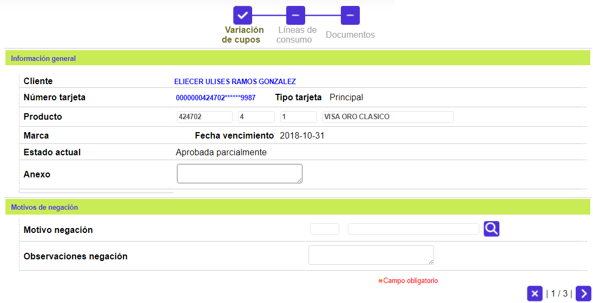
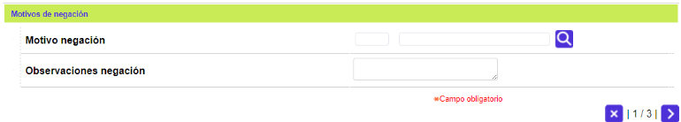
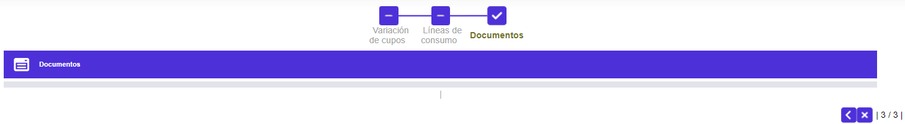
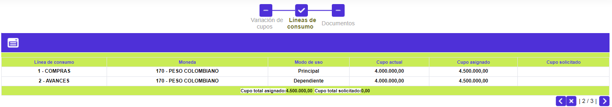

Variación de cupo de crédito
A través de este wizard se registra la solicitud de incremento del cupo de la tarjeta, conformado por los cupos de las distintas líneas de crédito. La entidad, si lo desea, puede utilizar esta funcionalidad para reducir el valor del saldo de las Cuentas contingentes de su balance, asignándole el valor mínimo de una unidad monetaria, a cada línea de crédito, siempre y cuando los saldos y/o bloqueos asociados a la tarjeta lo permitan; así mismo puede gestionar el decremento del cupo actual, a manera de minimizar el riesgo, para con aquellos clientes cuyas obligaciones han debido ser reestructuradas. Las variaciones aquí señaladas, por ser referidas a un único cliente son individuales, para otros casos el Sistema provee la opción Variación masiva de cupos, en el módulo de Cartera y contabilidad.
Cuando el tipo crédito es Titular y adicionales, el sistema muestra un formulario en el cual se muestran los clientes que dependen de la tarjeta principal.
En el formulario de otras solicitudes se selecciona la opción Variación de cupo de crédito y la tarjeta a la cual se le ingresará la solicitud.

Tarjeta |
Campo con lista de valores que contiene los diferentes números de tarjeta del cliente. El usuario debe seleccionar aquella para la cual se desea solicitar la Variación de cupo crédito. |
Adicionar: una vez se han seleccionado los datos anteriores, se deplegará un wizard de dos pasos. El primero de ellos contiene los bloques Información general y Motivos de negación:

Cliente |
Campo de salida desde el cual se podrá invocar la consulta del cliente al cual se le está ingresando la solicitud. |
Número tarjeta |
Campo de salida desde el cual se podrá invocar la consulta de tarjeta del cliente al cual se le está ingresando la solicitud. |
Tipo tarjeta |
Campo de salida que muestra qué tipo de tarjeta posee el cliente de la solicitud ingresada; puede ser Principal, Extendida, Amparada, o Adicional. |
Producto |
Estos campos se llenan automáticamente una vez ingresado el número de tarjeta asociado a la solicitud, permitiendo conocer el Segmento, Grupo de afinidad y Descripción que junto con el Bin conforman el producto crédito a reponer. |
Marca |
Campo de salida que ilustra la franquicia asociada al producto en la Definición del producto. |
Fecha Vencimiento |
Campo de salida en formato YYYY-MM-DD, que indica la fecha en que expirará el nuevo plástico de la tarjeta, cuando se ha parametrizado que el sistema deba calcular una nueva fecha de vencimiento. |
Estado solicitd |
Este campo ilustra la condición en que se encuentra la solicitud en cada momento, y que puede ser En zona gris, Negada totalmente, Negada parcialmente, Aprobada totalmente o Aprobada parcialmente. |
| Anexos | Campo que permite ingresar información relacionada con la solicitud, referente a documentos suministrados por el cliente u otros datos. |

Motivo negación |
Si aplica, contiene el código y la descripción de la causal de negación de la solicitud. |
| Observaciones negación | Campo que puede contener notas que ilustren las razones por las cuales fue denegada la solicitud. |
A través de los botones de la parte inferior derecha, se podrá cancelar el proceso o ir al segundo paso del wizard: Líneas de crédito .
Líneas de crédito: Segundo paso del wizard que contiene los siguientes campos a diligenciar:


Línea de crédito |
Campo que despliega las líneas de crédito parametrizadas en la Definición de productos. |
Moneda |
Campo de salida que ilustra la moneda en la que se expresan los saldos de cada una de las líneas de crédito. |
Modo uso |
Campo de salida que indica si la línea de crédito es Principal, Dependiente, Independiente o Especial, lo que determina si se puede borrar o no en la solicitud, así como la relación entre los cupos a estas asignado. |
Cupo total actual |
Campo de salida que ilustra el monto global que posee actualmente el cliente empresarial o principal que tiene tarjetas amparadas. |
Cupo asignado |
Este campo es alimentado automáticamente por el sistema con el mismo monto del valor solicitado, cuando los parámetros de la solicitud indican que ésta no pasará por la etapa de evaluación. Si se ha marcado que no se solicita la línea y si se ingresa algún valor para lineas de credito en cupo asignado, el sistema asignará cero por defecto. Por otro lado si la linea se ha marcado como solicitada el aplicativo exige que por lo menos se diligencie el valor del cupo de la línea principal. |
Cupo solicitado |
Campo que contiene el monto solicitado por cada línea. El sistema controla que dicho cupo no supere el valor máximo parametrizado en las Líneas crédito de la Definición de productos y que la sumatoria de estas tampoco exceda el cupo máximo por producto. Si se ha marcado que no se solicita la línea y si se ingresa algún valor para lineas de credito en cupo solicitado, el sistema asignará cero por defecto. Por otro lado si la línea se ha marcado como solicitada, el sistema permite que tanto la línea principal como las demás queden en cero si el usuario asi lo prefiere, en este caso el aplicativo exigirá que la línea principal tenga algún valor así sea cero. |
A través de los botones de la parte inferior derecha, se podrá regresar, cancelar el proceso, o avanzar al tercer paso del wizard: Documentos.
Actualizar: Si en formulario del otras solicitudes el usuario invoca la opción Actualizar, se despliega el siguiente formulario.


Detalle: De igual forma, si en formulario del otras solicitudes el usuario invoca la opción Detalle, se despliega el siguiente formulario.

